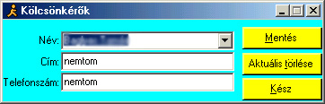

Kölcsönkérõk
Alapértelmezett
ikonja: |
|
| Pillanatkép: |
 |
Itt tárolhatod, hogy kik szoktak tõled CD-ket kölcsönkérni. Ez azért hasznos, mert a néven kívül
címet és telefonszámot is tárol.
Új ember bevitele: Nagyon egyszerû. A név mezõbe kell begépelni az illetõ nevét, majd [ENTER]-t
nyomni. A program név szerint indexel, tehát nem lehet 2 ugyanolyan név. Miután bevitted az
összes adatot (akár olyat is, mint a képen), mindenképpen kattints a Mentésre, mert csak akkor
írja be az adatbázisba az adatokat.
Törlés: Az "Aktuális törlése" gombra kattintva. Törlés elõtt megerõsítést kér.
Ha végeztél, kattints a "kész" gombra, amely bezárja az ablakot.
JulWCZar haverjának üzenem, hogy lehet az adatokat utólag is módosítani (kiv. a nevet),
de a módosítás után kattints a "mentés" gombra, mert külömben elvesznek a módosításaid!